รูปแบบงานส่งมอบ / DELIVERABLES
DWG, PDF, CSV, Excel, Civil 3D, ตารางพิกัด, รายงานผลสำรวจ, Photo Report, Method Statement และ Calibration Certificate ตามข้อกำหนดของแต่ละโครงการ
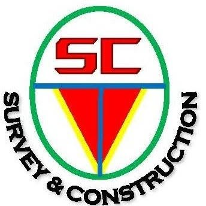
SC Survey & Construction ให้บริการงานสำรวจวิศวกรรมครบวงจร ตั้งแต่สำรวจภูมิประเทศ วางผังและตรวจสอบเสาเข็ม สำรวจด้วยโดรน ตรวจวัดการทรุดตัว ไปจนถึงงาน As-Built ติดต่อทีมงานได้โดยตรง ประเมินราคาไว ส่งมอบข้อมูลตามมาตรฐานโครงการ
ข้อมูลทุกชุดผ่านการตรวจสอบซ้ำทั้งหน้างานและในสำนักงาน ส่งมอบในรูปแบบที่ทีมออกแบบและผู้รับเหมานำไปใช้งานต่อได้ทันที
ผ่านงานภาคสนามมาแล้วหลากหลายรูปแบบ ทั้งงานอาคาร โรงงาน คลังสินค้า และโครงสร้างพื้นฐาน ดูผลงานของเรา →
มีความพร้อมด้านทีมงานภาคสนามและเครื่องมือสำรวจทันสมัย พร้อมเดินทางปฏิบัติงานทุกจังหวัดทั่วประเทศไทย
เครื่องมือผ่านการสอบเทียบ (Calibration) ปฏิบัติงานตามข้อกำหนดของแต่ละโครงการ พร้อมเอกสารประกอบครบถ้วน
ให้บริการงานสำรวจวิศวกรรมสำหรับโครงการก่อสร้าง โรงงาน คลังสินค้า อาคาร และงานพัฒนาอสังหาริมทรัพย์ ตั้งแต่งานสำรวจเบื้องต้น งานควบคุมการก่อสร้าง งานตรวจสอบ ไปจนถึงงานสำรวจเพื่อส่งมอบโครงการ กดที่บริการเพื่อดูรายละเอียด
DWG, PDF, CSV, Excel, Civil 3D, ตารางพิกัด, รายงานผลสำรวจ, Photo Report, Method Statement และ Calibration Certificate ตามข้อกำหนดของแต่ละโครงการ

การกำหนดหมุดควบคุมและตรวจสอบค่าพิกัดความละเอียดสูงหน้างานก่อสร้าง
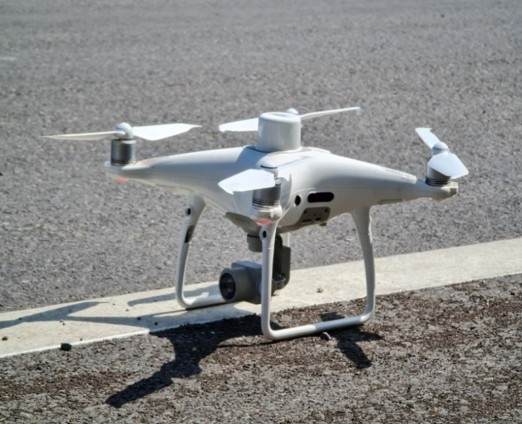
จัดทำแผนที่ Orthophoto และแบบจำลองภูมิประเทศ 3 มิติ
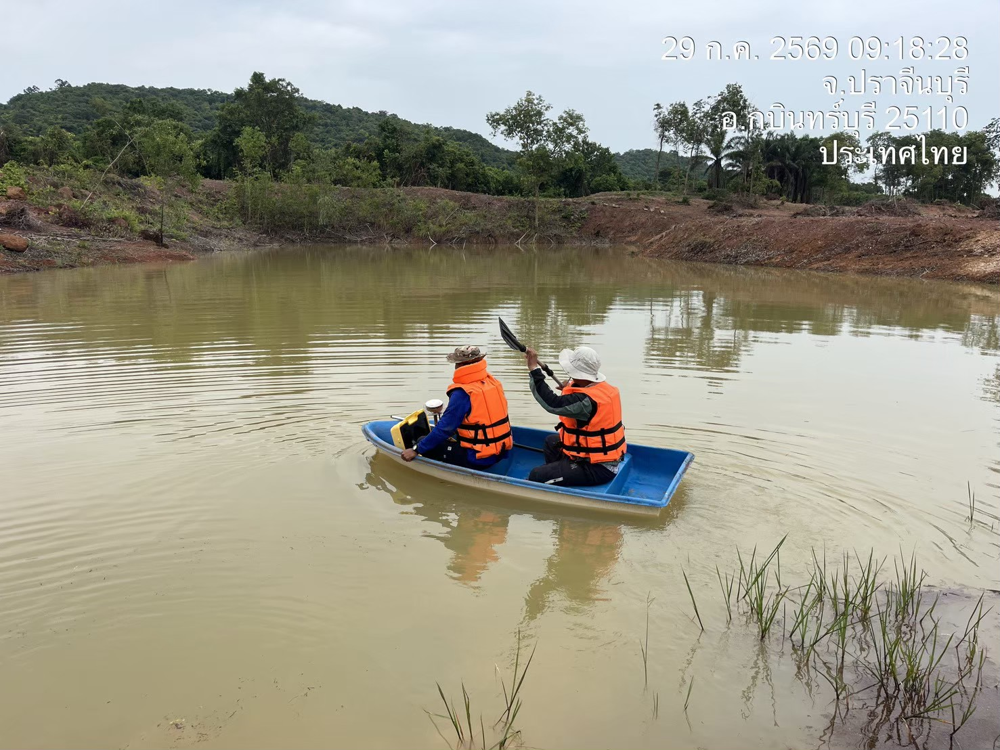
ตรวจวัดระดับท้องน้ำและความลึกคลองหรืออ่างเก็บน้ำ
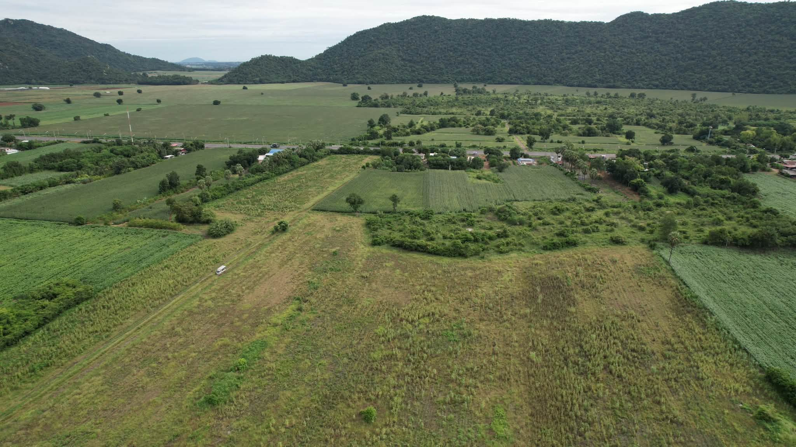
สำรวจพื้นที่และประเมินปริมาณงานดินสำหรับโครงการก่อสร้างขนาดใหญ่
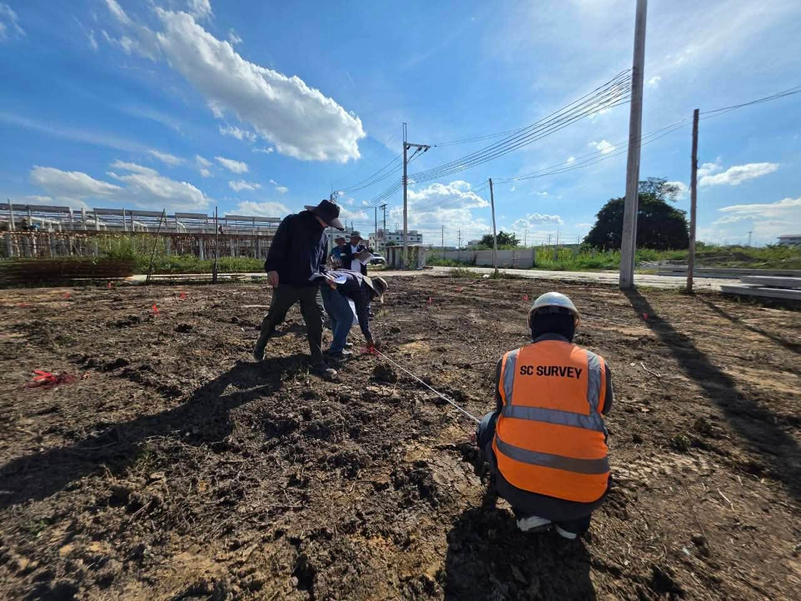
ตรวจสอบค่าพิกัดและการเยื้องศูนย์ของเสาเข็มหลังการติดตั้ง
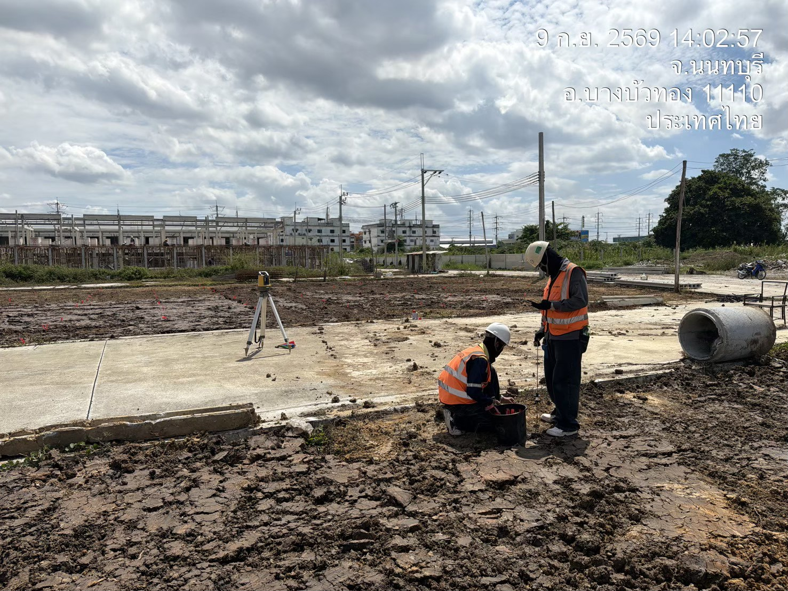
วางแนวแกนอาคาร (Grid Line) และระดับโครงสร้างพื้นฐาน
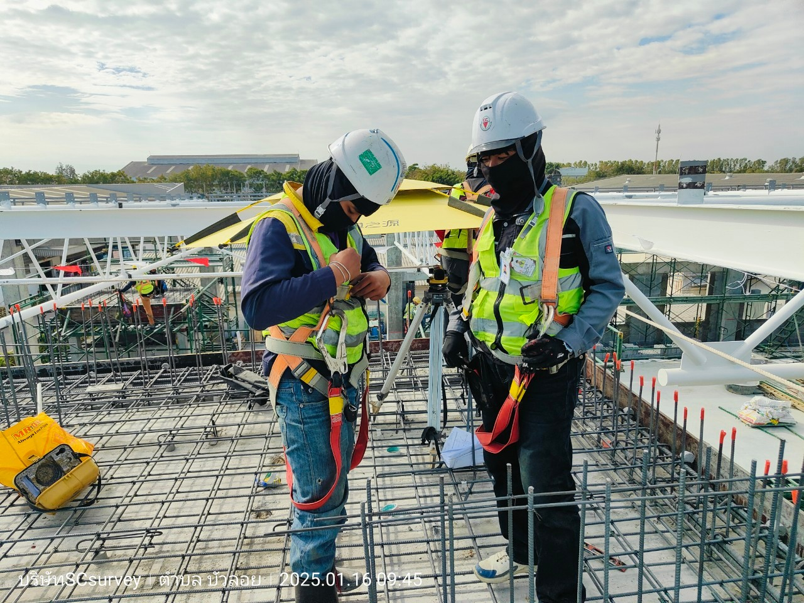
ปฏิบัติงานตรวจสอบระดับและความเรียบของโครงสร้างอย่างละเอียด เพื่อให้งานก่อสร้างได้มาตรฐาน
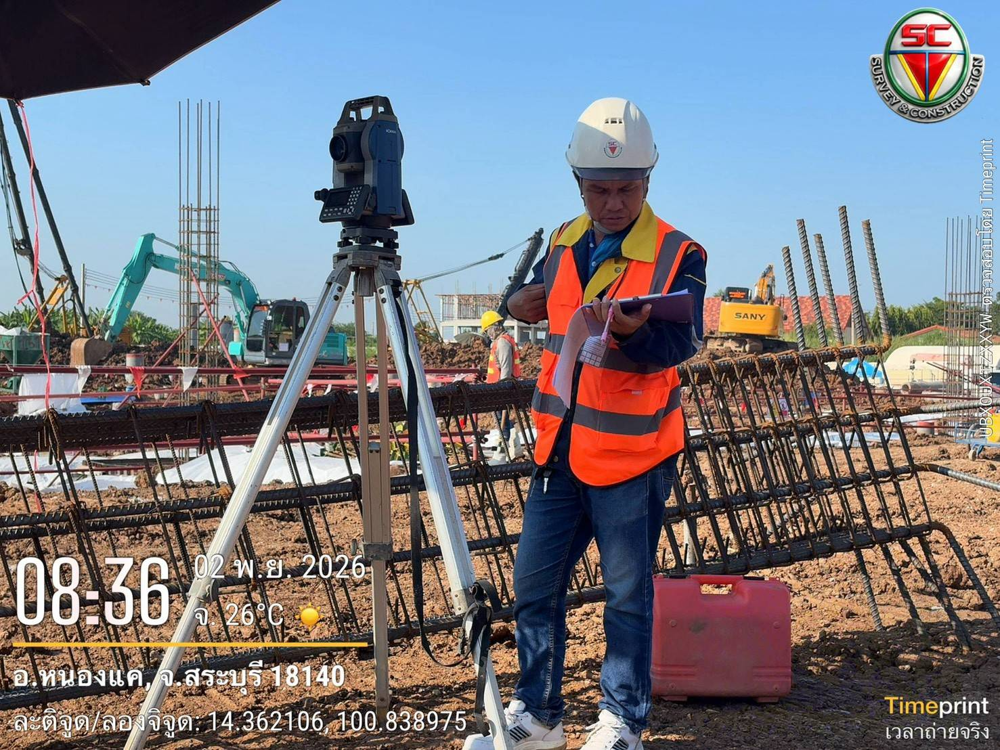
ปฏิบัติงานตั้งกล้องสำรวจความละเอียดสูงเพื่อควบคุมแนวโครงสร้างและฐานรากหน้างานก่อสร้าง
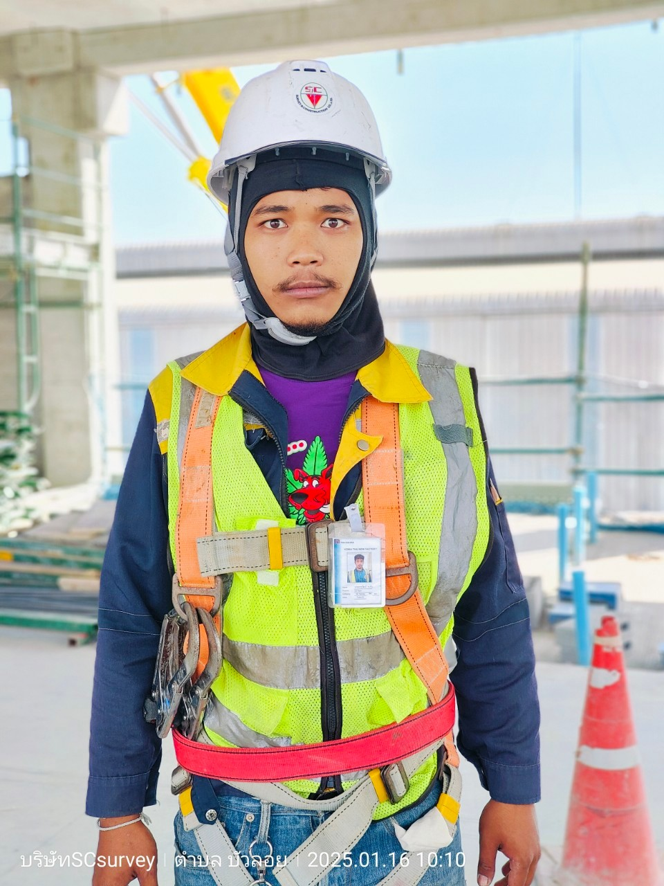
ตรวจสอบความตั้งตรงและแนวระนาบของเสาและผนังอาคารด้วยเครื่องมือวัดมาตรฐาน
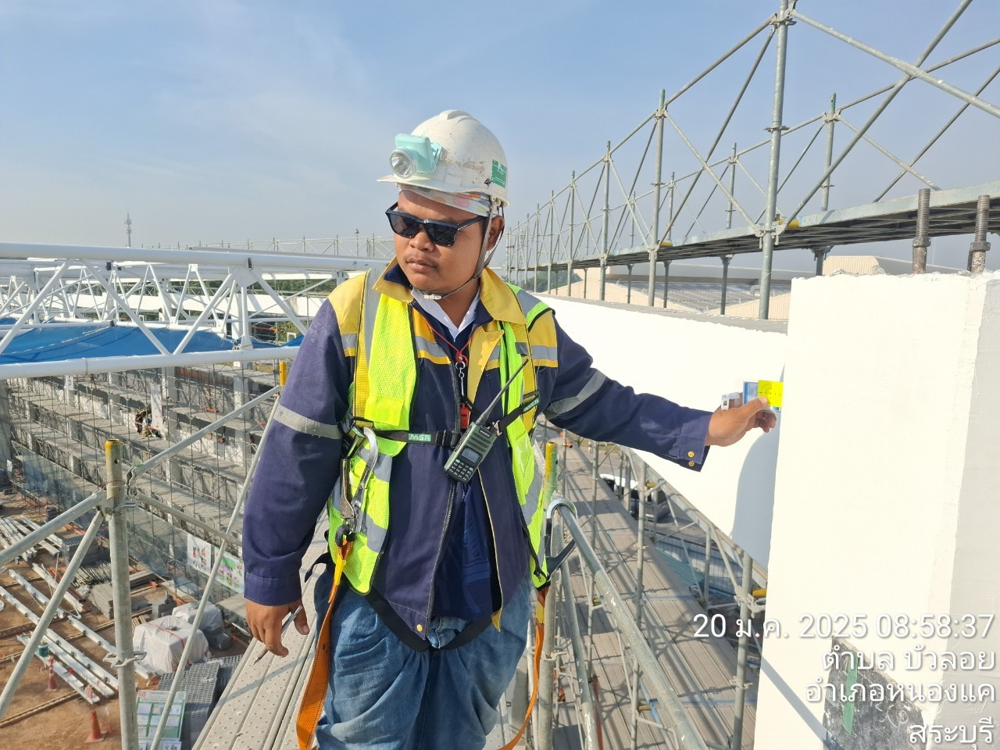
ทีมวิศวกรและช่างสำรวจปฏิบัติงานบนโครงสร้างเหล็ก พร้อมอุปกรณ์เซฟตี้เต็มรูปแบบ
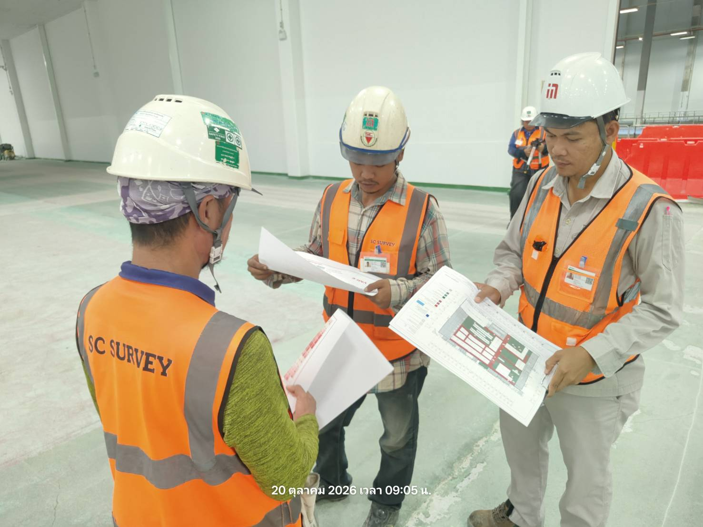
ทีมงานลงพื้นที่ตรวจสอบความถูกต้องของหน้างานจริง เพื่อให้การดำเนินงานเป็นไปตามแผน

ทีมงานภาคสนามพร้อมลุยทุกพื้นที่ ปฏิบัติงานด้วยความปลอดภัยและได้มาตรฐานวิศวกรรม
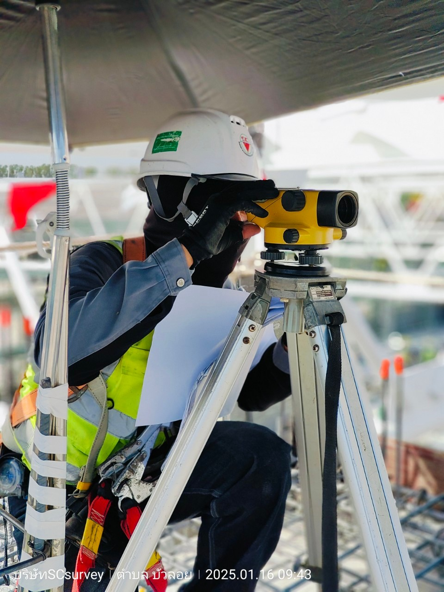
ตรวจสอบความเที่ยงตรงของผนังและโครงสร้างอาคารในพื้นที่โครงการก่อสร้าง
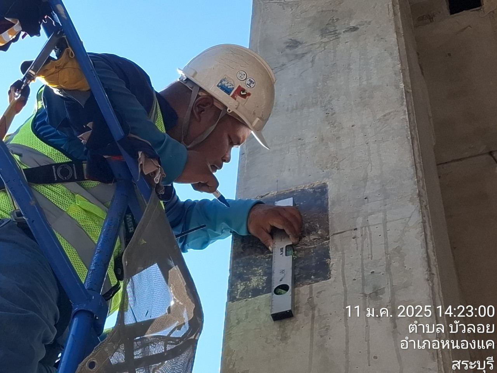
ปฏิบัติงานตรวจสอบหน้างานบนนั่งร้านด้วยความระมัดระวังและสวมใส่อุปกรณ์เซฟตี้ครบถ้วน
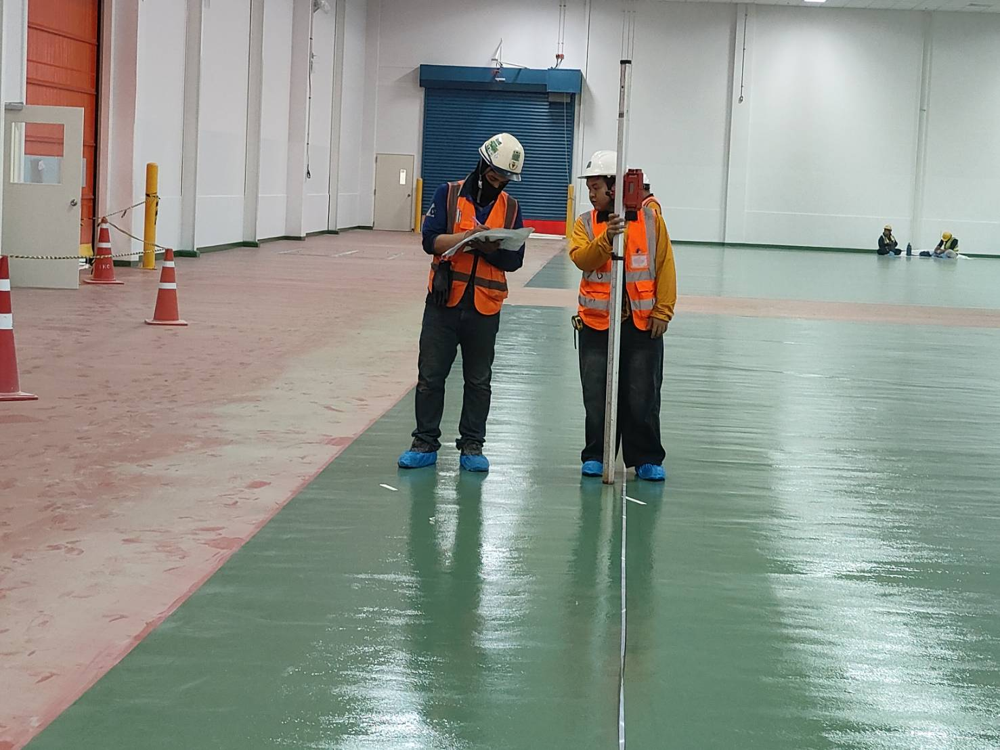
สำรวจและประเมินพื้นที่หน้างานจริงสำหรับโครงการติดตั้งเครื่องจักรและโครงสร้างโรงงาน
ติดต่อทีมงานโดยตรงตั้งแต่ขั้นตอนแรกจนส่งมอบงาน ไม่ผ่านคนกลาง
รับแบบ พิกัดหน้างาน และขอบเขตงาน แล้วประเมินราคาให้ฟรี
เตรียมทีมงาน เครื่องมือ และข้อมูลอ้างอิงที่จำเป็น
ปฏิบัติงานตามแผนและข้อกำหนดของโครงการ พร้อมแจ้งความคืบหน้า
ตรวจสอบความถูกต้องของข้อมูล แล้วส่งมอบแบบและรายงานตามขอบเขตงาน
กรอกรายละเอียดเบื้องต้น ทีมงานจะติดต่อกลับเพื่อสรุปขอบเขตงานและเสนอราคาโดยตรง ถ้ามีแบบหรือรูปหน้างาน ส่งทาง LINE ได้เลย
อยากได้คำตอบไวกว่า? ส่งแบบมาทาง LINE หรือโทร PHONE
ติดต่อ SC Survey & Construction ได้โดยตรง สอบถามข้อมูล ส่งแบบ หรือขอใบเสนอราคา
กรอกข้อมูลรายละเอียดโครงการของคุณ ทีมงานจะติดต่อกลับโดยเร็วที่สุด